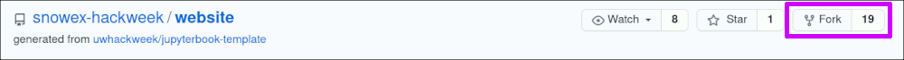
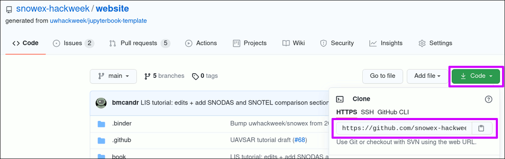

GitHub, Git, JupyterHub
Contents
GitHub, Git, JupyterHub¶
Learning Objectives
Use
gitto create copies of hackweek repositories on GitHub for modificationNavigate the JupyterLab interface for writing and executing code
Important
Before we go over this tutorial we expect that you have already gone through these preparation materials:
Git review¶
Here we will do a quick refresher on the different commands you will be using during this event. A good summary is this cheatsheet from GitHub.
These are a few commands we will use throughout the week:
Git command |
What it does |
|---|---|
|
Adds a new, previously untracked file to version control and marks already tracked files to be committed with the next `commit’ |
|
Saves the current state of the repository and creates an entry in the log |
|
Shows the history for the repository |
|
Copies a repository to your local environment, including all the history |
|
Gets the latest changes of a previously cloned repository |
|
Pushes your local changes to the remote repository, sharing them with others |
How do I make notes in the tutorials?¶
In order to make personal notes in the notebooks for each tutorial that you can save and keep for later reference, you first need to make a fork of the website. A fork is your personalized copy of the website that will be stored under your GitHub user account instead of the ICESat-2 Hackweek organization account. This also enables you to write to that repository, which in contrast you can not do with the ICESat-2 Hackweek organization repository. A fork is also a first common step to contribute to open-source projects and further described in the Pro Git book.
To make a fork of the website, go to the GitHub repository and hit the ‘Fork’ button in the top right corner. In the follow-up dialog, choose your user account as the destination

Next steps are the same as described in the follow section on how to get code copied to the JupyterHub.
Note
Remember that JupyterHub refers to the servers hosting our computing environment, and JupyterLab is the web-based user interface that we interact with.
How do I get code from GitHub to the JupyterHub?¶
After you successfully set up the git command, you can
copy code between the two using the clone
command with git. A clone creates a copy of the repository with the current
state of the repository including the complete history.
Example: Clone the fork of the website with the tutorials¶
Go to your user page on GitHub and select the ‘website’ repository.
The URL to clone the repository can be found after clicking on the green ‘Code’ button.

On the JupyterHub, open a new Terminal using the ‘Launcher’ or via the menu File -> New -> Terminal
By default, a new Terminal will be in your home directory. Use the
pwdcommand to verify:pwdOutput:
/home/jovyan
In the Terminal, issue the
git clonecommand and paste the URL you copied in step 1.A note about cutting and pasting
Pasting something from your clipboard into the JupyterLab terminal can require holding down the “shift” key and right-clicking. This is different from the usual Linux method that only requires a right click.
Attention
The below sample command has the
<github-username>as a placeholder. This should be replaced with your GitHub username.
This step will also create a folder in the current location of your terminal. The folder will be calledwebsite, which originates from the name of the repository.Your command should look like this before hitting the Enter key to execute it:
git clone https://github.com/<github-username>/website
Sample output:
Cloning into 'website'... remote: Enumerating objects: 3295, done. remote: Counting objects: 100% (310/310), done. remote: Compressing objects: 100% (212/212), done. remote: Total 3295 (delta 159), reused 201 (delta 80), pack-reused 2985 Receiving objects: 100% (3295/3295), 84.81 MiB | 31.23 MiB/s, done. Resolving deltas: 100% (1951/1951), done.
You now have a local copy of the website.
To verify, list the current working directory via the
lscommand:(notebook) jovyan@jupyter:~$ ls -l
Sample output:
total 4 drwxr-sr-x 6 jovyan users 4096 Jul 9 17:10 website
You will also see the folder on the left-hand side in the file explorer:

You are now set up to follow along with all tutorials, including making changes
and then saving those by recording changes with git.
To store your commits to GitHub, don’t forget to issue a git push from your
repository.
For advanced users: Using a branch for personal changes
While it is not required to create a branch for your personal annotations, it is a common practice to do so when making changes to a repository.
Think of the main branch as the tried and tested version of a repository and
a new branch from that is used to introduce a change that can slowly progress.
Once ready, it will be merged to the main branch.
The chapter of contributing to a project describes more behind this principle.
Commands for branches:
To create a branch named my_work:
git branch my_workTo change to the branch:
git checkout my_workTo delete a branch:
git branch -d my_work
How do I keep up with changes to the initial forked repository?¶
By making a fork of the website, you are creating a copy of the website as of the date you clicked the ‘Fork’ button. This also means that your version will not get any updates automatically if the ICESat-2 Hackweek website repository is changed after your fork was created.
To update your forked version with changes from the ICESat-2 Hackweek version, you need to do a one time setup. This process is also called ‘working with a remote’ for a git repository.
Add the ICESat-2 Hackweek organization repository as a remote¶
A remote is defined with a label and a URL. In our case and command below,
we are using {{hackweek}} as the label and {{website_url}}.git
as the URL.
Note
The chosen label {{hackweek}} is found in many projects as the upstream. Here we
just went with a more descriptive label instead of the default value.
# Change to the website folder, it was created with the `clone`
cd website
# Add the remote
git remote add {{hackweek}} {{website_url}}.git
The command will not return any output. Instead, we verify by printing the list of known remotes for this repository:
Attention
The below sample output has the <github-username> as a placeholder
and should show your GitHub username.
git remote -v
{{hackweek}} {{website_url}}.git (fetch)
{{hackweek}} {{website_url}}.git (push)
origin https://github.com/<github-username>/website.git (fetch)
origin https://github.com/<github-username>/website.git (push)
You are now set up and do not need to repeat this before every update you fetch from the website.
Getting the changes from the originally forked repository¶
To update your fork of the website, you first need to fetch and then pull
the changes. A fetch is a pre-step that reads all the changes that need to
be applied to your fork. The {{hackweek}} command options indicates from which
source the changes will be queried from.
Reading changes from the remote ‘ICESat-2 Hackweek’:
git fetch {{hackweek}}
To now also get and apply those changes, you need to issue a pull command.
In contrast to the above, you also need to specify which branch you want
to get the changes from. In most cases, this will be the ‘main’ or ‘master’ branch
of a repository.
Attention
It is highly recommend to have no uncommitted changes in your
repository before pulling changes from a remote. To verify this, a git status
command should return nothing to commit, working tree clean at the end of the
output.
Applying changes from the remote ‘ICESat-2 Hackweek’:
git pull {{hackweek}} main
Note
For more information about branches, see the Pro Git book chapter
Last and to update your fork on GitHub, issue a:
git push
Overview of a forked and then updated repository¶

How can I upload a file to the JupyterHub?¶
Attention
The below description works well for smaller files (<10 MB) or zipped archives.
Your files are persisted acrosss server shutdowns and startups and you don’t have to upload them again when you log out at the end of the day and restart anew the next day.
The user space has a total limit of 10 GB, which is a ICESat-2 Hackweek JupyterHub set limit.
You can use /tmp for temporary large files and they are not persistet after
logout.
We also have an Amazon S3 bucket for larger files you need for your projects. Ping us on Slack for details on how to get your files onto there.
Uploading a file to your userspace on the JupyterHub can be done using the user interface in the browser. Below screenshot shows the location of the upload button (purple highlighted box), which will open a dialog in your browser.

Summary¶
Congratulations! That’s the end of our “GitHub, Git, JupyterHub” tutorial. You now are equipped with basic git commands and have familiarity with the JupyterHub computing environment.
References¶
If you want to learn more about these topics, check out the following references: